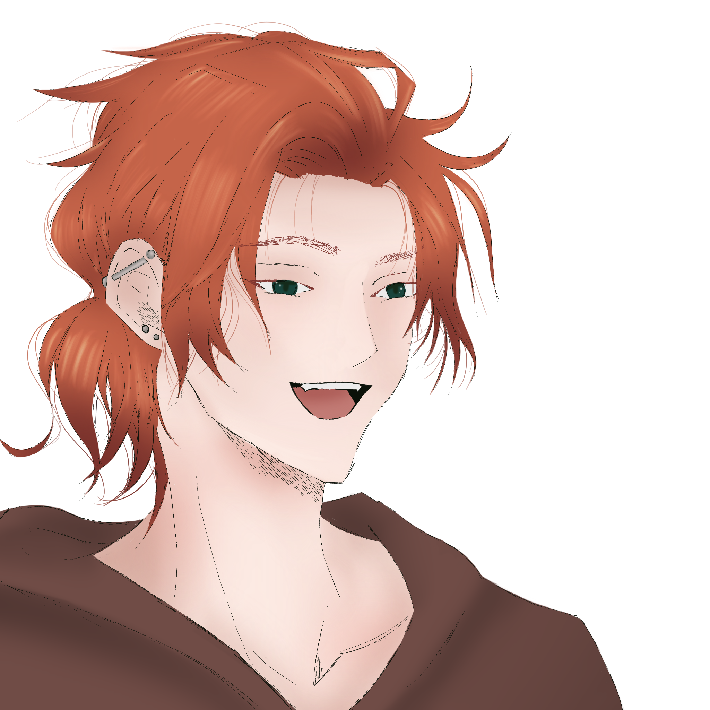

DEMIAN LACANNOUX

Yaş: 26
Doğum Tarihi: 13 Aralık 1996
Burç: Yay
MBTI: ISFP
Bölüm: Gastronomi
Sınıf: Master
İlişki Durumu: Var - Sydney
Köken: Anne tarafı isveç
Kardeş: Bir üvey
Saç Rengi: Kızıl
Göz Rengi: Koyu Yeşil
Boy: 1.88
Kilo: 83
Kan Grubu: AB-

- En sevdiği yemek midye güvecidir.
- En sevdiği hayvan geyiktir.
- En sevdiği şarkı The Royal Guard - Sabaton.
- Favori rengi mordur.
- Sydney'e küçük pastalar yapmayı çok sever.
- Mottosu: "Alea Iacta Est. (Zarlar Atıldı.)"
- Sürekli filmlerden alıntı yapar.
- Memleketinin yemeklerini çok özlüyor.
- Açacağı restoranın tutmayıp kapanmasından çok korkuyor.
- Michelin yıldızlı bir şef olmak hayalidir..
- Ciddi şekilde evlenmeyi ve çocuk sahibi olmayı düşünüyor.
- Cupcake adında bir kedisi var.
- Tatlıyla tuzluyu karışık yemeyi sever.
- Ülkesini çok özlüyor..